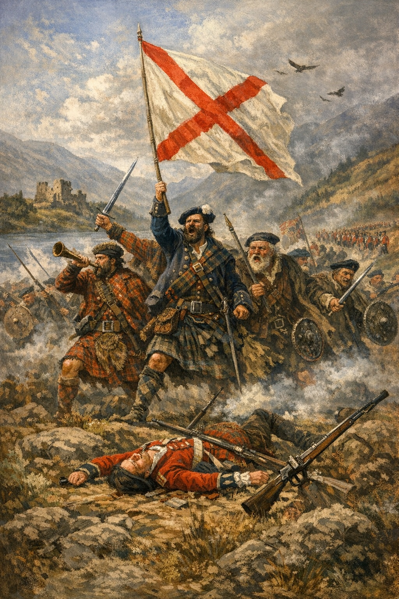

The Jacobite Rising of 1745 in the Rochdale Parish
The Jacobite rising of 1745 was an attempt by Charles Edward Stuart to regain the British throne for his father, James Francis Edward Stuart. Charles launched the rebellion in the scottish highliands. France was planning to send 10,000 troops to suport Charles Edward Stuart in a direct invasion of England.
William Robertson’s accounts in Rochdale Past and Present and Old and New Rochdale provide a vivid, local perspective on the Jacobite Rising of 1745. The story of Valentine Holt is one of the more poignant local legends from this era, blending the history of a prominent family with the personal tragedy of the rebellion. The following narrative presents the factual account of his life and death as recorded by Robertson, set within its wider historical context.
The life of Valentine Holt, background and character
Valentine Holt was a member of the Holt family of Grizzlehurst, a branch of the ancient and powerful Holts of Stubley and Castleton. By the mid–eighteenth century, however, his branch of the family had seen a decline in fortune. Robertson records that Mr Valentine Holt was the son of William Holt, a cloth manufacturer of Yorkshire Street, Rochdale, and a descendant of the famous Holts of Stubley Hall.
Valentine was skilful in horsemanship and an exceptionally clever marksman. He was born on 28 July 1720 and educated at Rochdale Grammar School Lane. Tall, erect, muscular, well proportioned, bright, with animated eyes, an air of dignity, a confiding look, and an engaging grace, he cut a striking figure. Sprightly in conversation, his voice was uncommonly musical. His affable manners and courtesy of demeanour won all hearts.
Mr Francis Townley, Mr Thomas Chadwick, and Mr Valentine Holt were bosom companions and spent most of their time in hunting, shooting, fencing, cricket, and propelling the boundary football like a rocket; and when shod with steel they hissed along the polished ice for many hours until the orange sky of evening died away. They were also fired with admiration of the valiant falcon’s aerial flight.
Valentine’s father devoted the whole of his attention to manufacturing good, substantial cloth, and the quality of it had gained him a good reputation, though the old cloth maker loved to roam. Valentine’s mother, from his childhood, had loaded him with good advice and had visions of his success in his career. Amongst other high positions, she thought he might become a Member of Parliament and ultimately sit on the woolsack.
Skills, pursuits, and temperamentDespite his diminished social standing, Valentine was well known in the Rochdale district for his physical prowess and charisma. Robertson describes him as a natural athlete, an expert walker and runner who could cover vast distances on foot. His deep knowledge of the local geology—the gritstone edges and coal seams of the Rochdale hills—made him an expert guide. He understood the “lay of the land” better than almost any man of his era, using the rocky terrain of the Pennines as his personal playground.
As an avid hunter he spent much of his time in the hills and moors surrounding Rochdale. Valentine was a master of the local rivers, particularly the River Roch and the Spodden. He was famed for hunting otters, often spending entire days waist–deep in water. This was not merely sport; it was a testament to his rugged constitution.
A journey to LondonOnce he made a trip to London on horseback. The journey through verdant valleys and fertile, well–cultivated plains delighted him, though the few days before had brought sorrowful scenes. He arrived in London at midnight on the second day and stayed in a large hotel near St Paul’s Cathedral. The sight of Westminster Abbey and the atmosphere of the place, redolent of the glory and the grave where England lays some of her greatest to sleep, made a deep impression on him.
A visit to the House of Lords and Commons was of great interest to Valentine. He spent many happy hours in clubs of various descriptions and in Masonic lodges, absorbing the social and political life of the capital that his mother had once imagined he might inhabit in a more official capacity.
Romance and disappointmentValentine was also a romantic figure. He was deeply in love with a local woman, and his desire to provide for her was a significant motivator in his life. Lizzie Butterworth regularly attended services at St Chad’s Church. Mr Valentine Holt’s pew was opposite that where Lizzie Butterworth sat. She had a natural bent towards religion.
Lizzie appreciated his affection but, as if half–confessing, she reminded him that his rank exceeded her own and that she was merely a humble toiler for her daily bread. On the Monday before his enlistment, Lizzie Butterworth and Valentine quarrelled. She had accused him of being on too familiar terms with a handsome cousin of his, an impeachment which he denied. The lovers then avoided each other.
The recruitmentIn late 1745, the Jacobite army of Prince Charles Edward Stuart (Bonnie Prince Charlie) marched through Lancashire on its way toward Derby. While the Prince himself did not enter Rochdale, his recruiters and “foraging” parties did, and the political crisis of the realm was felt keenly in the town.
After the quarrel with Lizzie, Valentine was at a hotel enjoying refreshments with Mr Francis Townley and Mr Thomas Chadwick, but he was pale and sorrowful, smarting and pining under Lizzie’s accusation. Valentine was not naturally a political insurgent. On the previous day Mr F. Townley and Mr T. Chadwick, at Manchester, had again been introduced to Charles Stuart. They had agreed to join his army and persuaded Valentine Holt to become a member of it.
His widowed mother was speedily made acquainted with his rash act, and she hastily visited the hotel and clung about his neck. She tried to persuade him to abandon his resolve. Valentine, however, declined to obey his mother’s behest. Thus a man whose talents and temperament were better suited to country life and local society found himself drawn into a dynastic rebellion.
Service and the siege of CarlisleValentine marched north with the Jacobite forces as part of the Manchester Regiment. His time in service was brief and gruelling. After the Jacobite army’s advance stalled and the council at Derby resolved to retreat, the army fell back toward Scotland. A small garrison was left behind at Carlisle to hold the castle against the pursuing Duke of Cumberland, and Valentine was among those left to defend the city.
The siege was short and brutal. The Jacobite garrison, poorly equipped to withstand heavy artillery, was forced to surrender at discretion in December 1745. For the men of the Manchester Regiment, this surrender marked the beginning of an even darker chapter.
Arrest, trial, and executionAs a common soldier in a rebel army, Valentine’s fate was grim. He was moved to London to stand trial for high treason. Robertson notes that, despite his rugged health, the conditions of his imprisonment were devastating. He was found guilty of bearing arms against King George II. Like many of the Manchester Regiment, he was sentenced to be hanged, drawn, and quartered.
Valentine Holt was executed in 1746. The likely window for his death was in late July at Kennington Common, where the officers and soldiers of the Manchester Regiment were put to death. Robertson’s account emphasizes the tragedy of a man who was essentially a country gentleman at heart, led to his death not by deep political conviction, but by a momentary lapse in judgement fuelled by friendship, wounded pride, and the hope of a better life.
Key historical contextWhile Robertson’s accounts are based on local oral traditions and surviving records, they highlight how the 1745 Rising impacted specific families in the North of England, turning local characters into casualties of a national dynastic struggle. The story of Valentine Holt shows how the romantic allure of the Stuart cause, combined with personal circumstance, could draw even a reluctant man into rebellion—with fatal consequences.
Timeline of the end| Date | Event |
|---|---|
| 28 Nov 1745 | The Jacobite army enters Manchester; Valentine joins the Manchester Regiment. |
| 19 Dec 1745 | The retreat reaches Carlisle. Valentine is part of the 400 men left to guard the castle. |
| 30 Dec 1745 | Carlisle surrenders to the Duke of Cumberland. Valentine is taken prisoner. |
| 1746 | Valentine is marched to London in February and tried for high treason in the summer. |
| 30 Jul 1746 (probable) | Likely window for his execution at Kennington Common, where the Manchester Regiment officers and soldiers were put to death. |
In the fate of Valentine Holt, the long history of the Holts of Stubley intersects with one of the last great attempts to overturn the Hanoverian settlement. His story remains a local lens on a national crisis, preserved in the pages of Robertson’s Rochdale histories.